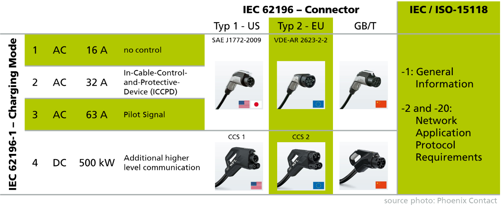
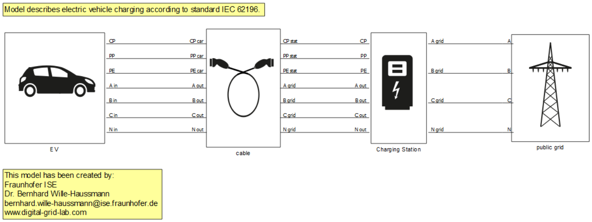
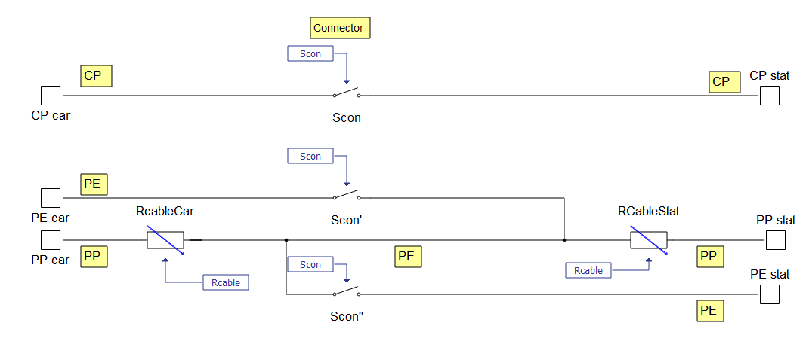
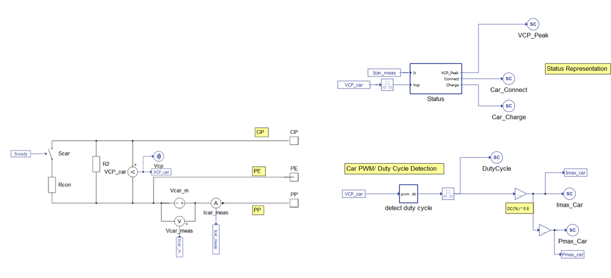
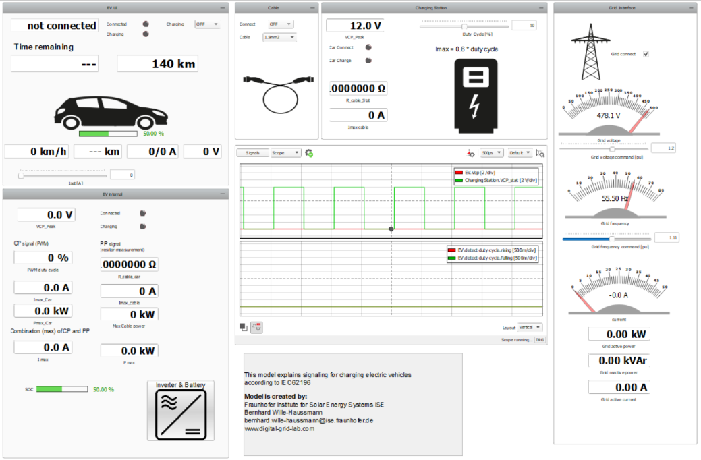
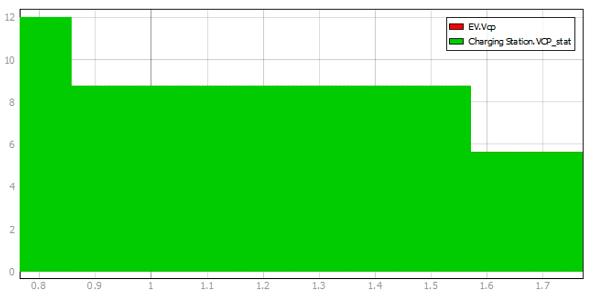
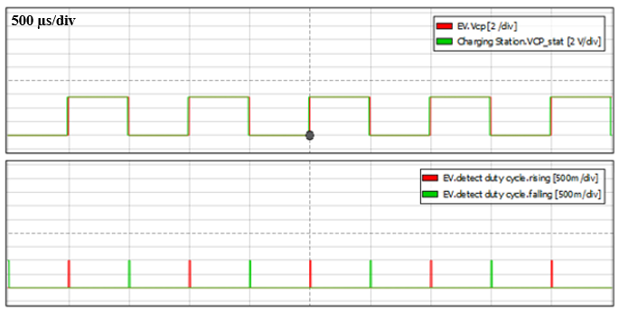
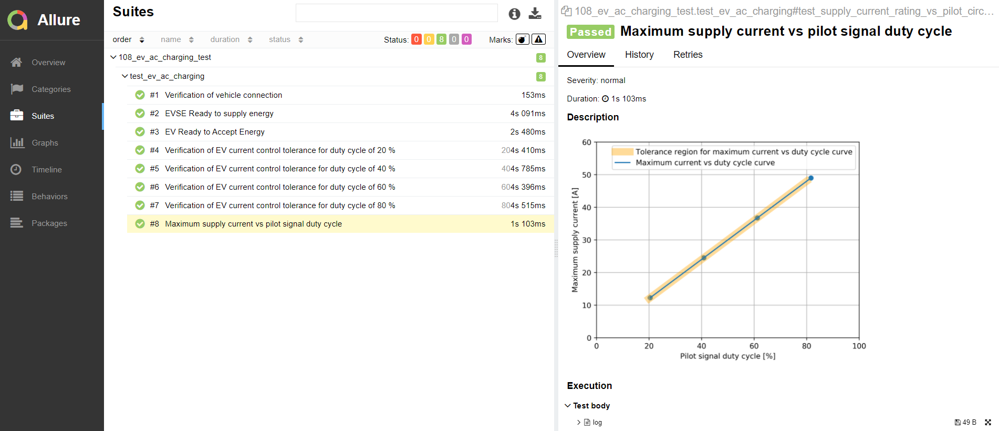

Electric vehicle charging according to standard IEC62196 – mode 3
Demonstration of Electric vehicle AC charging using an IEC62196 Type 2 connector. Communication between the EV charger and the EV is performed using PWM signalization over Control Pilot as per IEC 61851-1 and J1772.
Introduction
For charging electric vehicles (EV), an exchange of information between the EV supply equipment (EVSE) and the EV is needed in order to define conditions (e.g., charging power). This signaling is based on the international standard IEC 62196-1 which distinguishes 4 modes: 3 for AC and one for DC charging. Figure 1 summarizes the features for these modes. IEC 62196 also defines the used connectors dependent on their region.

To apply DC-charging, significant information exchange between the battery and the external power supply is essential. Thus, high level communication is needed. For AC charging, just the pilot signal is necessary. Most stationary installed EVSEs apply mode 3 as it allows the highest flexible and high charging powers. This application note describes the procedure of signaling on the contact pilot (CP) pin for AC charging according to IEC62196 - mode 3.
Model description
Figure 2 shows the implemented model of an EV, a charging station, the connecting cable, and the public grid. The EV battery is modelled using Battery ESS (Generic) component. The following section focuses on the signaling between the single components.


| Resistor PP-PE | 1500 Ω | 680 Ω | 220 Ω | 100 Ω |
|---|---|---|---|---|
| Maximum current | 13 A | 20 A | 32 A | 63 A |
| Cable cross section | 1.5 mm2 | 2.5 mm2 | 6 mm2 | 16 mm2 |
After the maximum current carrying capacity of the cable is detected, the EV charging requests need to be signalized, which is done via CP. On the CP pin the charging station provides a pulse width modulated (PWM) signal with an amplitude of ±12 V and a frequency of 1 kHz. This is evaluated on the EV side by the circuit shown in Figure 4. When the car is connected, the resistor R2 = 2.7 kΩ is in parallel and voltage VCP_car drops down to 8.8 V which states that connection is properly. With a charging request, the EV closes contactor Scar, which connects Rcon = 1.3 kΩ in parallel to R2. This reduces the VCP_car to 5.6 V and indicates everything is set up for charging. These statuses are evaluated on the EV and the EVSE side by a C-function Status. The maximum available current by EVSE is communicated via the Duty Cycle (DC) of the PWM signal on CP. The EV evaluates the DC. The model realizes this in the detect duty cycle sub model, which uses mainly edge detection and an integrator. The maximum current Imax_DC = 0.6 DC[%] is calculated by multiplying the DC percent by 0.6. Finally, the maximum current that can be provided by EVSE is the minimum of the two limits Imax_cable and Imax_DC.

Simulation
Figure 5 shows the SCADA representation of the previously described model. It represents settings and status of all components. For the charging station, we can mainly set the duty cycle and observe the status coded by Vcp. The cable allows us to connect the EV and to select a cross section of the applied cable. For the EV, a user interface like you would find in a normal car is visible. In addition, the internal values of the charging controller are shown. These include the detected DC, maximum current, and the detected status. The scope in the middle shows the Vcp on the EV side, including the detected edges from duty cycle detection.

Once you have started simulation, you can start a charging process. At first, you need to connect the EV in the cable block and enable charging at the EV side. To understand the status, it is helpful to observe Vcp (Figure 6). Vcp starts at 12 V, it drops to 8.8 V after connecting, and after the requesting charging, Vcp falls to 5.6 V.

Figure 7 shows the measured PWM signal at the EV. The signal pattern shows that the time on and off are equal. Thus, the duty cycle is 50%, which means the charging station can deliver a maximum of 30 A.

By selecting a charging current in the EV’s user interface in the SCADA, you should observe an increase state of charge for the EV. Notice if you try to set the Iset value higher than the Imax_car you will not be allowed to. The charging station dictates the maximum current and therefore prevents damage to the charging infrastructure.
Test automation
The provided test automation script validates the performance of the EVSE during the following operation modes:
- Verification of vehicle connection
- EVSE Ready to supply energy
- EV Ready to Accept Energy
- Verification of EV current control tolerance for several duty cycles
After these operation modes have been tested, the script generates a plot of the Maximum supply current as a function of the pilot signal duty cycle. Along this plot is a tolerance curve which confirms that the values of the Maximum supply current are in the expected range. Both of these curves can be seen on the right of Figure 8, along with the list of all test cases on the left of the figure.

You can obtain a full test report by running the test from TyphoonTest IDE (for easy access, press the "Open Test" button in Example Explorer).
Example requirements
Table 2 provides detailed information about the file locations and hardware requirements for running the model in real-time, followed by the HIL device resource utilization when running the model using this minimal hardware configuration. This information is provided to help you with running and customizing the model as you see fit.
| Files | |
|---|---|
| Typhoon HIL files |
examples\models\automotive\electric vehicle AC charging electric vehicle AC charging.tse electric vehicle AC charging.cus \examples\tests\108_ev_ac_charging_test test_ev_ac_charging.py |
| Minimum hardware requirements | |
| No. of HIL devices | 1 |
| HIL device model | HIL101 |
| Device configuration | 1 |
| HIL device resource utilization | |
| No. of processing cores | 2 |
| Max. matrix memory utilization | 6.4% (core1) 4.15% (core0) |
| Max. time slot utilization | 42.27% (core1) 19.09% (core0) |
| Simulation step, electrical | 1 µs |
| Execution rate, signal processing | Multirate (10 µs, 400 µs) |
Authors
This model has been created by the Fraunhofer Institute for Solare Energy Systems ISE within the activities of the Digital Grid Lab. In this service laboratory, tests of EVSEs are performed. For detailed questions, please refer to:
[1] Dr. Bernhard Wille-Haussmann, Fraunhofer ISE, Head of Grid Operation and Planning, bernhard.wille-haussmann@ise.fraunhofer.de